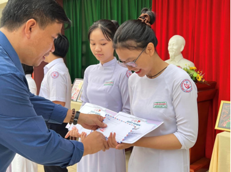

NGÀY HỘI SÁCH

Viết bởi Administrator Thứ ba, 18 Tháng 4 2023 21:25
NGÀY HỘI SÁCH
Trong không khí của những ngày tổ chức các hoạt động nhằm hưởng ứng Ngày sách và văn hóa đọc Việt Nam lần 2 năm 2023, Đoàn Trường THPT chuyên Nguyễn Bỉnh Khiêm phối hợp với Thư viện và CLB Sách tổ chức Tuyên truyền, giới thiệu sách, chủ đề "Cuốn sách nhỏ của tôi".
Tại chương trình đã diễn ra phần trao thưởng cho các bạn đạt giải tại vòng Chung kết cuộc thi: Cuốn sách nhỏ của tôi".
Thầy cô và các bạn học sinh được nghe lại phần giới thiệu đầy ấn tượng của 3 bạn:
Bạn Nguyễn Đoàn Tú Uyên - 10 chuyên Hoá với cuốn sách Ba người Thầy vĩ đại - Giải Nhất;
Bạn Nguyễn Phạm Thanh Trúc - 10 chuyên Tin với tác phẩm Muôn kiếp nhân sinh - Giải Nhì;
Bạn Đoàn Ngọc Thế Hào - 10 chuyên Tin với tác phẩm Không gia đình - Giải Ba.
Bên cạnh đó, giờ sinh hoạt chào cờ ghi dấu ấn bằng những giọng ca vàng đầy tài năng của chi đoàn 10 chuyên Toán với 2 ca khúc:
- Lá cờ - Bùi Long Khánh
- Con cò - Việt Võ và band.

Chúc quý thầy cô và các bạn học sinh một tuần làm việc và học tập hiệu quả. Cuối cùng gửi đến các bạn một thông điệp nhỏ: "Một cuốn sách hay cho ta một điều tốt, một người bạn tốt cho ta một điều hay" – Gustavơ Lebon.
- 02/06/2023 20:26 - TIẾP SỨC MÙA THI - Podcast “Alo Khiêm nghe nè” – C…
- 25/05/2023 16:28 - CHUNG KẾT ĐƯỜNG LÊN ĐỈNH OLYMPIA 2023
- 21/05/2023 20:29 - LỄ TRI ÂN VÀ TRƯỞNG THÀNH KHỐI 12, KHÓA 19 (2020-2…
- 08/05/2023 20:33 - CÁC CHƯƠNG TRÌNH NÂNG CAO KĨ NĂNG THỰC HÀNH XÃ HỘI…
- 16/04/2023 20:13 - CÂU LẠC BỘ TIẾNG ANH – DUY TRÌ VÀ PHÁT HUY PHONG T…
- 15/04/2023 20:36 - HỘI KHỎE PHÙ ĐỔNG (15/04/2023)
- 10/04/2023 19:46 - CUỘC THI “CUỐN SÁCH NHỎ CỦA TÔI” (10/04/2023)
- 10/04/2023 19:10 - TRIỂN LÃM SẢN PHẨM DẠY HỌC STEM 2022-2023
- 09/04/2023 23:34 - Đêm nhạc đường phố